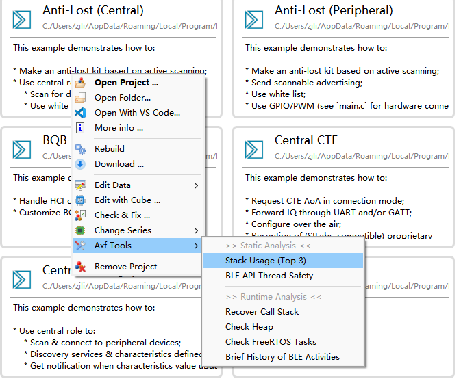

Axf Tool 是一个用于分析可执行程序和内存转储的命令行工具。这个工具包含多种功能：当程序编译成功后，可进行静态分析；出现 HardFault、Assertion 等问题时，
调用 trace_full_dump2 生成内存转储（即 Dump 文件），然后进行动态分析。这个工具对于 Dump 文件的格式要求很低，允许其它内容存在。例如，
用串口工具长时间保存串口输出到文件，在使用本工具时，不需要清理这个文件里所包含的其它日志信息 —— 除非其它日志也使用了 Intel Hex 格式。
该工具已集成到 Wizard 的项目快捷菜单里：

当工具需要读取编译后的可执行文件时，Wizard 首先会自动查找，如果未找到，则弹出对话框，要求选择可执行文件。 对于由 Wizard 生成的 Keil 或者 Gnu 工具链项目，工具一般能够自动找到编译后的可执行文件。 当工具需要读取 Dump 文件时，也会弹出对话框，要求选择 Dump 文件。
从快捷菜单里运行工具虽然方便，但是功能受限。通过命令行使用，功能更全面。下面介绍几种主要的功能。
在命令行下通过 axf_tool.exe help {function} 可获得每种功能的详细信息。请注意，每个命令都需要传入
-db latest.db 参数以指定使用名为 latest.db 的数据库。
静态分析
stack-usage
静态分析栈的使用情况，并报告栈空间使用最多前 N 条函数调用链。从快捷菜单调用时，显示前 3 条函数调用链。
借助这个功能统计栈用量，避免栈空间越界。开发者也可以 Web 版调用图工具 callgraph 图形化地查看栈用量、最大调用链。
- 该工具不能保证给出的数据 100% 准确；当使用 Keil 时，建议同时参照 Keil 工具给出的统计信息，以较大的数据为准；
- 当使用了函数指针时，无法静态确定所要调用的函数（报告中标记 unknown），从而无法进行统计，导致结果偏小；
bt-api-thread-safety
分析对蓝牙 API 的调用，检查是否违反了单线程约定。使用这个功能时，需要“告诉”工具哪些函数肯定是只由蓝牙协议栈所调用的。—— 这些函数及只由这些函数所调用的函数就是符合单线程约定的，工具会把其它函数罗列出来供进一步确认。
从快捷菜单调用时，只认为 setup_profile, user_packet_handler, att_read_callback 和 att_write_callback
等 4 个函数肯定是只由蓝牙协议栈所调用的，符合单线程约定。如果需要“告诉”工具其它函数也没问题，那么可以使用命令行。比如，
在一个 GATT 客户端程序里，还有 characteristic_discovery_callback 等 3 个函数也确认只是协议栈的回调函数，
就可以把这 3 个也一起作为 -bt_cb 参数：
axf_tool bt-api-thread-safety -db latest.db -bundle ING9187xx typical v1.9.39 ^
-app path/to/app/executable ^
-bt_cb setup_profile user_packet_handler att_read_callback att_write_callback ^
characteristic_discovery_callback descriptor_discovery_callback service_discovery_callback
基于 Dump 的动态分析
call-stack
尝试从内存转储中恢复出现问题时的函数调用栈。下面某个 ble_hcic_eif:766 Assertion 的 Dump 分析，
从中我们看到整个调用栈的最底下是 prvTaskExitError，这是 FreeRTOS 任务最底部的桩函数，再往上就是
程序的 foo 函数，它调用了蓝牙 API gatt_client_write_value_of_characteristic，这违反了协议栈的单线程约定。
[....] try to load ...
[....] linking
[....] disassembly and loading
[....] linking
[....] loading ....
[INFO] ASSERTION found, more info: https://ingchips.github.io/web_apps/assertion_tool/index.html?q=%5BASSERTION%5D%20%40%20ble_hcic_eif.c%3A766
[ OK ] done
[....] top function @pc is `trace_full_dump`
[....] Call stack:
[....] 0. ├─ `trace_full_dump`
[....] 1. ├─ `cb_assertion+36` (@...)
[....] ...
[....] ...
[....] 9. ├─ `gatt_client_write_value_of_characteristic+46` (@...)
[....] 10. ├─ `foo+354` (@...)
[....] 11. ├─ `prvTaskExitError` (bottom of a FreeRTOS task)
[ OK ] ────┴───── (done)
history
给出 BLE 活动简史。通过这个功能可以观察出问题的前后一小段时间内 BLE 活动是否正常、是否符合预期。
下面的分析结果里的 [ OK ] integrity check 说明相关的内存数据基本正常，可以继续分析。
出问题时，程序大致运行了 12 小时 51 分。目前存在一个连接间隔为 100ms 的连接，以及一个 Legacy 广播。
[....] try to ...
[....] linking
[....] loading ...
[ OK ] integrity check
current timer (T): 46266487352us (~46266487.352000ms) (~46266.487s) (~12:51:6.487)
[....] BLE activities (history & future) in descending order:
┌────┬──────────────┬─────────────────┬────────────┐
│ # │ Task │ Time │ Duration │
├────┼──────────────┼─────────────────┼────────────┤
│ 0 │ Legacy_ADV │ T+48420 │ 4679 │
├────┼──────────────┼─────────────────┼────────────┤
│ 1 │ CONN │ T+40193 │ 6250 │
├────┼──────────────┼─────────────────┼────────────┤
│ 2 │ CONN │ T+0 │ 10306 │ <- current
├────┼──────────────┼─────────────────┼────────────┤
│ 3 │ CONN │ T-9807 │ 6250 │
├────┼──────────────┼─────────────────┼────────────┤
│ 4 │ CONN │ T-19974 │ 10167 │
├────┼──────────────┼─────────────────┼────────────┤
│ 5 │ CONN │ T-29974 │ 10306 │
├────┼──────────────┼─────────────────┼────────────┤
...
check-heap
尝试检查堆的健康状态。这项功能支持多种堆：
-
FreeRTOS 提供的
heap_4；既支持软件包内置的 FreeRTOS，也支持外置 —— 前提：使用了相同或相近版本的
heap_4。 -
Link Layer 内的堆。
check-task
在内存转储的帮助下动态检查 FreeRTOS 里的各个任务的情况，包含任务状态、栈用量等。
对于栈用量统计，与 stack-usage 相比，优点是可以统计出 stack-usage 无法识别的函数指针等情况，
缺点是只能统计已执行的代码。
既支持软件包内置的 FreeRTOS，也支持外置 —— 前提：FreeRTOS 版本相同或相近。
Q&A
-
我的程序使用的是旧版本的 SDK，如果使用这个工具？
可以使用命令行。打开旧版本 Wizard 的 Options 窗口，进入 SDK 页面，确认软件包版本号， 比如 ING9187xx 的 typical v1.7.8。 安装 SDK v8.4.5 或 v8.4.6，进入 axf_tool 目录，以命令行方式使用（这两个版本的 SDK 不需要添加
-db ..参数），如：axf_tool call-stack -bundle ING9187xx typical v1.7.8 ^ -app path/to/app/executable ^ -dump path/to/dump/file